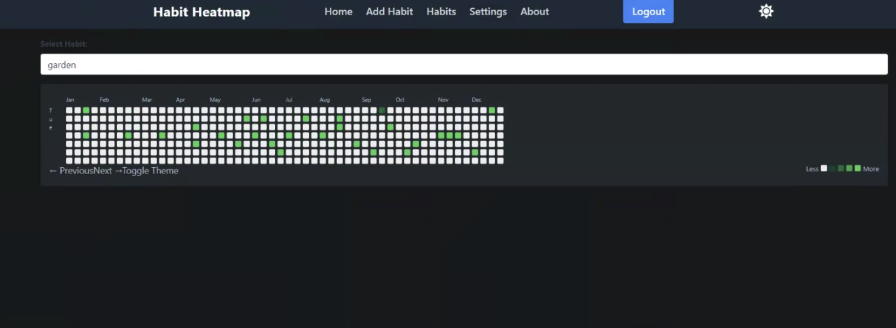
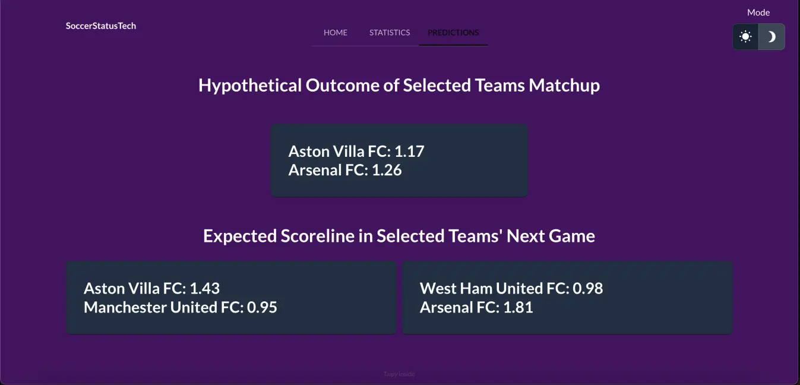

Habit Heatmap
Habit Heatmap is a web application that helps you track your habits and visualize your progress. It uses a heatmap to show you how well you are doing with your habits. The app is built with React, Tailwind, MongoDB, and Flask.

Hacklytics Soccer Dashboard
Our dashboard predicts the outcome of future matchups between any two teams in the English Premier League. It provides visualizations on player statistics, wins/losses, and seasonal performance. Built with TensorFlow, Keras, Numpy, Pandas, Python, Figma, and Taipy.